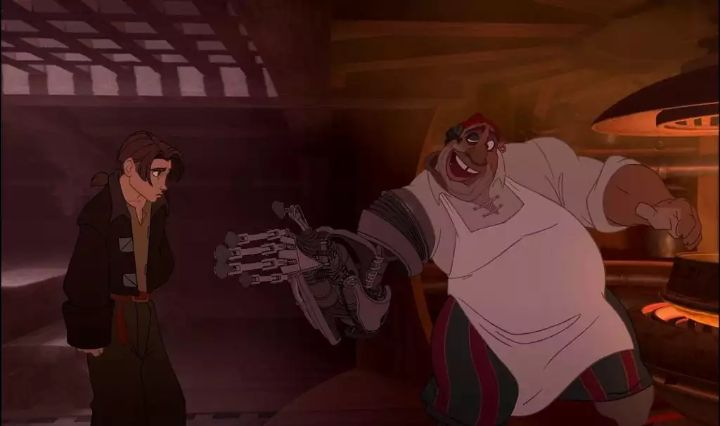

Ah, man... "Treasure Planet" came out at exactly the right time for me in 2002, and I was its target audience, a boy / pre-teen. That didn't seem to be the case for everyone else though: it's still marked as the most expensive 2D animated film ever made (at about half the cost of the most expensive CGI movies ever made as of 2022), but didn't make back it's budget, officially being labelled as a box-office bomb (perhaps it was a sci-fi issue: Disney's "Atlantis" and Don Bluth's "Titan A.E." also performed poorly). At the time, full CGI movies were also becoming mainstream and commonplace outside of Pixar, so this movie's failure was likely an early tipping point to Disney's decision to abandon the medium all together years later. But it's also one of the most lush and beautiful, and most earnest Disney adventures put to film.Inspired by Robert Louis Stevenson's "Treasure Island," the concept was actually pitched decades earlier, and was a passion project for directors John Musker and Ron Clements, best known for directing "The Little Mermaid" and "Aladdin." The movie has a similar feel to "Aladdin," and perhaps a bit of "Tarzan" and "Atlantis - The Lost Empire." In this version, intergalactic travel is possible and commonplace, alien species work and live together, and sea ships can fly through space with sails that catch solar winds (also, no oxygen seems to be required for some reason). Jim Hawkins is a rebel teenager, living with his single mother and her inn business after his father leaves them. He loves skateboarding (using a "solar surfer" surfboard) and has a daredevil attitude, causing him to frequently run in to the law, to his mother's distress. Like other teenagers in angst, he doesn't really care about his future or what happens to him, and has a complete lack of direction in life. That all changes when a pirate crash lands on their property, chased by other pirates, giving them a treasure map before their inn is burned to the ground. The only course of action is for Jim, and their family friend Dr. Doppler, to finance an expedition to find the legendary Treasure Planet with the map. But unbeknownst to them, their hired crew might include the very pirates that were after the map to begin with. The biggest issue I have with "Treasure Planet" is the writing and acting. The dialogue is mostly fine, but sometimes stumbles with simplistic lines, and in the case of Jim, he tends to be wide-eyed during the voyage and says "cool" a lot. The most glaring example is the character of John Silver, the ships's cyborg cook. He has a strong Scottish/Welsh accent, and every joke and kind word he delivers is written like Shakespearian poetry, which is beautiful, but darn-near impossible to understand. With a tripple-chin and a winking-nod, he's like a uncle-figure that Jim needs, but that face gets used too frequently, up to an eye-rolling moment at the very end of the movie when we see his face in the clouds. Aside from the details in the writing, the bones of the story are a solid adventure with clever twists and turns. This is a proper action-adventure with science-fiction seemingly blended in to great effect. It's exciting and engaging. The cast is memorable, with Captain Amelia and first-mate Mr. Arrow being highlights. The main character stumble might be B.E.N., played by Martin Short, who might be the eccentric stand-in for the Genie of "Aladdin" (likewise, the cute-pet mascot character Morph feels like a mix of Genie and Abu), but comes off a little strong.  As the most expensive 2D film to date, "Treasure Planet" delivers on the visual front. CGI environments are used heavily, and in some cases, are blended directly with characters, like John Silver and his robotic Swiss-army-style-arm and leg. It's not a seamless hybrid in all shots, but it's surpremely impressive to watch. The general visual style is also really cool, like the concept of the solar-surfer or the popular space port being a crescent moon. It's an example of great ideas with great execution. This isn't a musical, but there are a couple pop-rock insert songs from Jogn Rzeznik of the Goo Goo Dolls, which I didn't mind at all (and in the 2000's, those are great songs to listen on your iPod). The rest of the musical score is solid fantastical fare. My personal bias for "Treasure Planet" is strong. I'm it's target audience in just about every way. And thanks to it's high production values and the right tone, it feels like a great attempt to bring the classic story as a new Disney classic for modern audiences.
- "Ani" More reviews can be found at : https://2danicritic.github.io/ Previous review: review_Towanoquon Next review: review_Triage_X